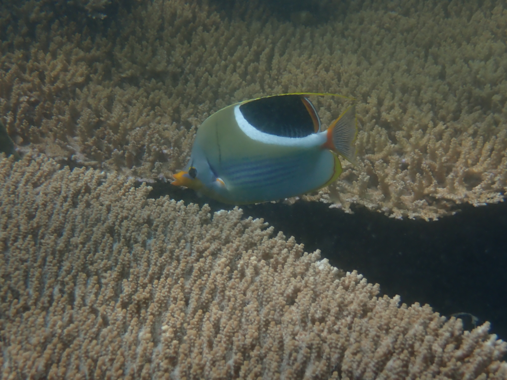
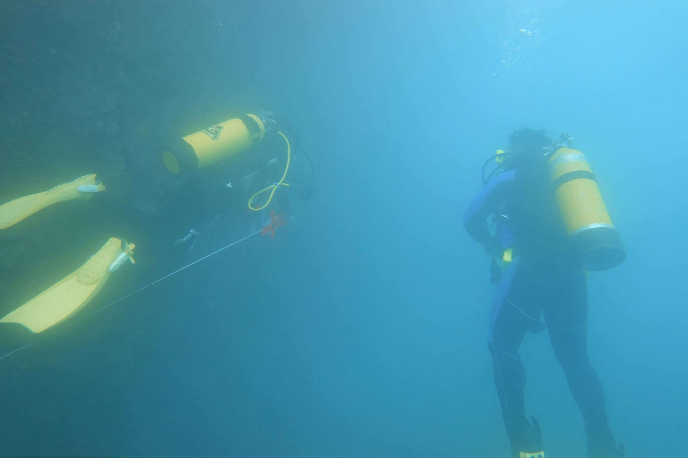
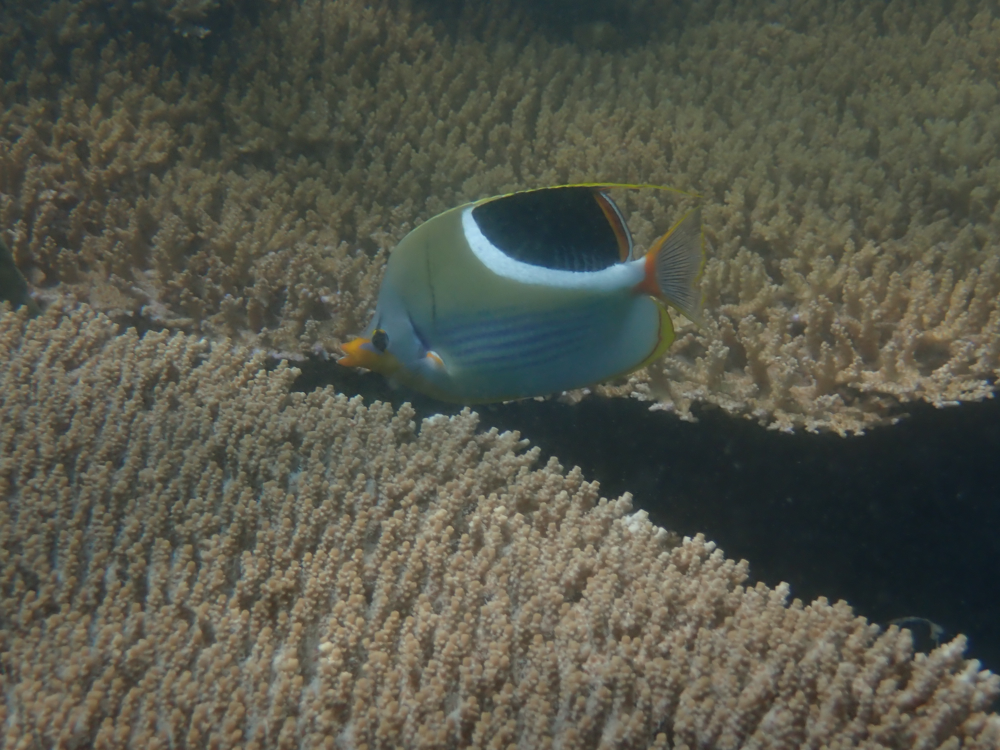
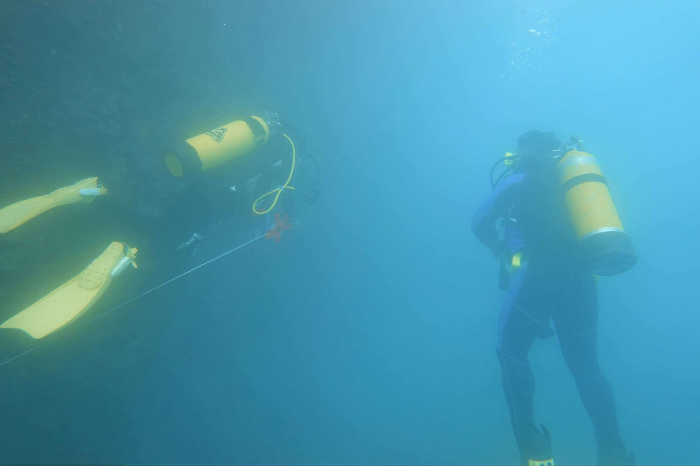
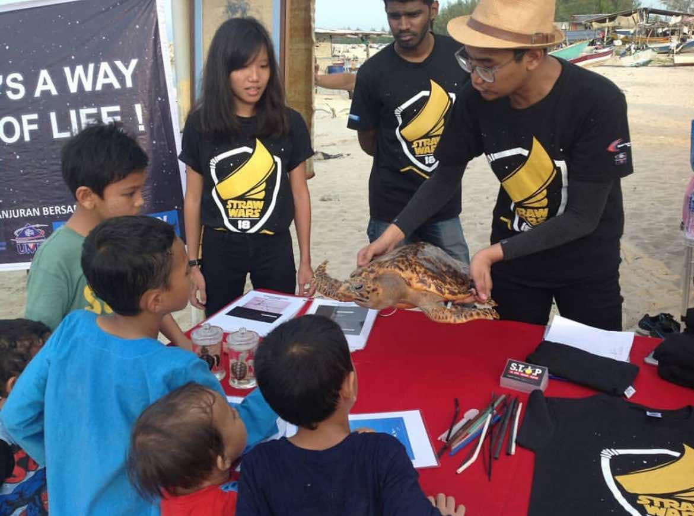
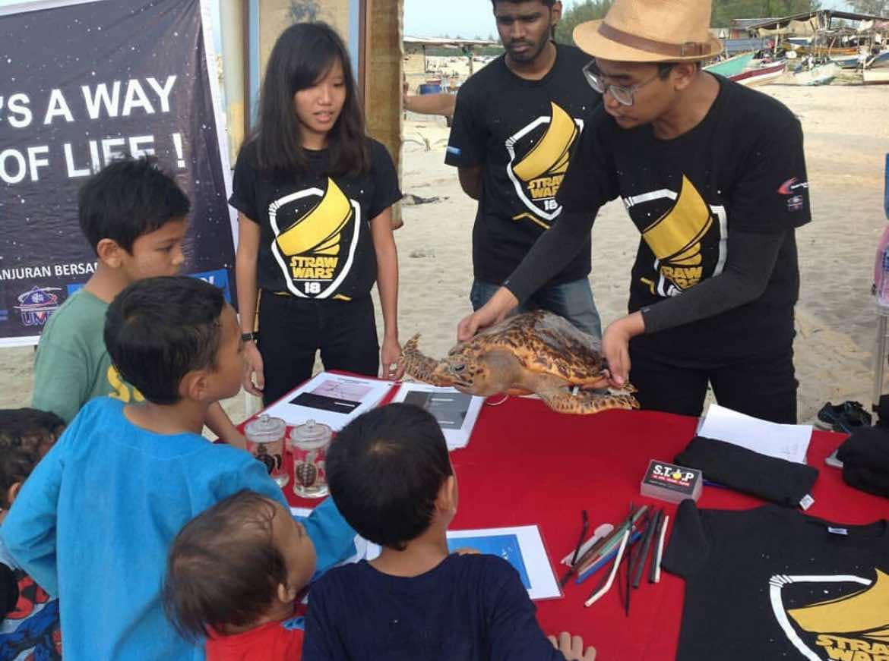

SUMMARY
Advancing Marine Conservation Through Data-Driven Research
Driven Marine Biologist with a strong foundation in marine research, environmental monitoring, and data-driven analysis. Skilled in underwater field surveys, water quality assessments, biodiversity studies (population genetics), and data analytics. Proven ability to generate insightful environmental assessments using statistical tools (R, Excel, Power BI) and communicate complex findings effectively to stakeholders. Recognized for achievements including the Best Presenter Award (2019), consistent Dean’s List honors in Malaysia, and the Scholarship Student Award (2022) in Taiwan. Passionate about leveraging data-driven insights to contribute to positive change in marine conservation.
Check my resume
 



 
